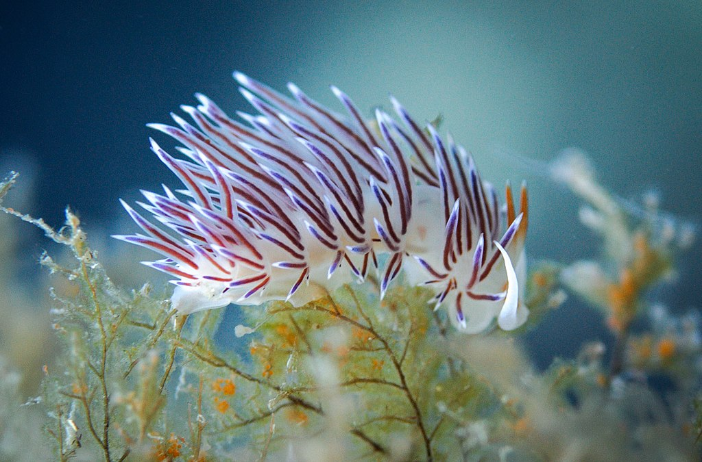

Show the code
library(rgbif)
physalus_gbif <- occ_search(scientificName = "Balaenoptera physalus")
physalus <- physalus_gbif$data GBIF is an abbreviation for Global Biodiversity Information Facility, an international network and data infrastructure. It is funded by the world’s governments and aimed at providing anyone, anywhere, open access to data about all types of life on Earth.
At the time of writing, there were more than 2.7 billion records published in the GBIF database, in both marine and terrestrial realm on a global scale. The webpage itself is very practical in terms of navigation and search, but what is even better is that occurrence data can be easily accessed and downloaded through R (rgbif package), either for a species or taxa of interest. Let’s take a look on how it can be done.
To access the occurrence data we can use occ_search() function, which will contact the GBIF server and download the data from the database. For example, if you are interested in occurences of the fin whale, you would have to set the argument scientificName = "Balaenoptera physalus". There are many helpful arguments we could use to refine our search (i.e. hasCoordinate, country, continent, etc.), but I will refrain from using them in this post. This will download the data and store in the gbif format, which is essentially a list with 5 elements. We could explore all of them, but we are mostly interested in the $data part, where coordinates and other information on the records are stored. You can explore the resulting data set in the table below the photo.

library(rgbif)
physalus_gbif <- occ_search(scientificName = "Balaenoptera physalus")
physalus <- physalus_gbif$data You might have noted there were 500 observations included in the table (number of entries). This happens by default, if there are more than 500 occurrences in the database, as is the case for fin whales (there are 110079 occurrences; which i found out with occ_count(taxonKey = 2440718)). To access more (or less), we would need to change the parameter limit = to the desired value (100,000 is the hard maximum stated in the package vignette). Lastly, look on the map where whales from our sample were seen. Whale icons created by Good Ware - Flaticon.
library(leaflet)
library(png)
whale <- makeIcon(iconUrl = "https://cdn-icons-png.flaticon.com/512/2834/2834539.png",
iconWidth = 25, iconHeight = 25)
leaflet(physalus) %>%
addProviderTiles("Esri.WorldImagery") %>%
addMarkers(
lng = ~ decimalLongitude,
lat = ~ decimalLatitude,
icon = whale,
label = ~ country
)The following example is a result of GBIF inspection after one student expressed the interest to graduate on nudibranchs (marine snails that lack shells) and do something with R (I was proud, that not all students go home in tears after my R labs 😄). First, just google nudibranchs and be amazed in what colors and shapes they come. I am showing just one that I find very interesting.

So, before agreeing with this student on what she could do for her bachelor thesis, I quickly looked at what is available on GBIF for our region. I found out occ_search() can be used for higher taxa as well, but not by their Latin names. One needs to first find out the key of the taxa of interest (be it phylum, kingdom, class, order, familiy or genus) using name_suggest(q = "Taxa of interest") function. The function returns all keys that match the search string, see example below for Nudibranchia.
To access the Nudibranch data, we now need to specify orderKey = 980. To limited the search to Adriatic Sea we can use geometry = 'POLYGON(()) argument which is very simple. I searched for multiple coordinates on Google-maps to create a polygon around the Adriatic Sea and list them within the parenthesis. The thing to be aware of is that the polygon has to be closed, i.e. the first and last point must have the same coordinates.
library(rgbif)
nudibranch_Adriatic_gbif <-
occ_search(geometry = 'POLYGON((18.46 40.05, 22.03 42.26, 13.89 46.87, 8.68 46.36, 18.46 40.05))',
orderKey = 980,
limit = 5000)
nudibranch_Adriatic <- nudibranch_Adriatic_gbif$data
name_suggest(q = "Nudibranchia")Records returned [3]
No. unique hierarchies [0]
Args [q=Nudibranchia, limit=100, fields1=key, fields2=canonicalName,
fields3=rank]
# A tibble: 3 × 3
key canonicalName rank
<int> <chr> <chr>
1 980 Nudibranchia ORDER
2 4329412 Thysanote nudibranchiata SPECIES
3 8310904 Auricularia nudibranchiata SPECIESWhen the data is downloaded, we again extract only $data part, where coordinates are stored. This inquiry yielded 547 occurrences that belong to 52 different species (list at the end of the post). You can see where they were recorded on the map below. Nudibranch icon accessed at MahaRaja Eco Dive Lodge.
library(leaflet)
nudibranch <-
makeIcon(iconUrl = "https://images.squarespace-cdn.com/content/v1/5a55df2e9f8dce980ddb50ea/1515818936193-QIFQGV59CKSO9ZFX4GAD/Icon-09.png?format=750w",
iconWidth = 25,
iconHeight = 25)
leaflet(nudibranch_Adriatic) %>%
addProviderTiles("Esri.WorldImagery") %>%
addMarkers(lat = ~decimalLatitude,
lng = ~decimalLongitude,
label = ~species,
icon = nudibranch)I find it fascinating and amazing what happens when people join forces and do things for common good. The GBIF is an example of just that. The data is contributed to GBIF from around 2400 different sources, that include citizen science databases (i.e. iNaturalist), Universities, Institutes, Museums, etc. And to everyone else, including you and me, it is freely available to see, navigate, use and reuse! Kudos!
An in depth description of GBIF data access and analysis can be found here.
unique(nudibranch_Adriatic$species) [1] "Dendrodoris limbata" "Antiopella cristata"
[3] "Felimare villafranca" "Aeolidiella alderi"
[5] "Dendrodoris grandiflora" "Spurilla neapolitana"
[7] "Felimare picta" "Peltodoris atromaculata"
[9] "Flabellina affinis" "Edmundsella pedata"
[11] "Phyllidia flava" "Luisella babai"
[13] "Felimare tricolor" "Felimare orsinii"
[15] "Cratena peregrina" "Trapania maculata"
[17] "Paraflabellina ischitana" "Felimida luteorosea"
[19] "Caloria elegans" "Berghia coerulescens"
[21] "Trapania lineata" "Calmella cavolini"
[23] NA "Berghia verrucicornis"
[25] "Paradoris indecora" "Duvaucelia striata"
[27] "Duvaucelia manicata" "Paraflabellina gabinierei"
[29] "Facelina rubrovittata" "Doris ocelligera"
[31] "Diaphorodoris alba" "Melibe viridis"
[33] "Aporodoris millegrana" "Tethys fimbria"
[35] "Dicata odhneri" "Polycera quadrilineata"
[37] "Amphorina farrani" "Jorunna tomentosa"
[39] "Favorinus branchialis" "Felimare gasconi"
[41] "Doris pseudoargus" "Facelina vicina"
[43] "Felimida krohni" "Marionia blainvillea"
[45] "Felimida purpurea" "Platydoris argo"
[47] "Nemesignis banyulensis" "Hexabranchus sanguineus"
[49] "Doris sticta" "Trinchesia genovae"
[51] "Aegires leuckartii" "Atalodoris neapolitana"
[53] "Actinocyclus subtilis"